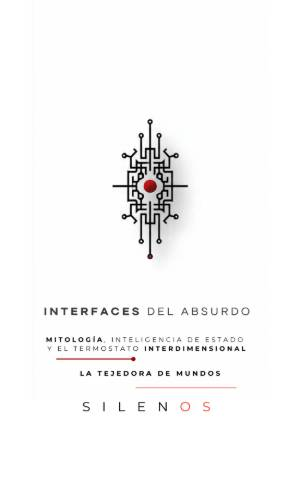

Illuminati
INTERFACES DEL ABSURDO : Mitología, Inteligencia de Estado y el Termostato Interdimensional
Sinopsis
¿Es nuestra realidad una constante inmutable o una interfaz abierta a la manipulación técnica y teúrgica? Interfaces del Absurdo es un análisis interdisciplinar riguroso que converge en las fronteras de la historiografía analítica, la cibernética aplicada, la teoría de la información y la geopolítica esotérica. Un viaje por la arquitectura de lo invisible Este tratado examina cómo los aparatos de inteligencia de Estado han interactuado históricamente con fenómenos anómalos, desde la época isabelina hasta la era del complejo industrial-militar contemporáneo. Lejos de ser ciencia ficción, esta obra presenta los protocolos de contacto interdimensional como engranajes lógicos de una maquinaria hipercompleja que interviene en nuestra soberanía cognitiva. ¿Qué descubrirás en esta obra? La sintaxis del poder: Un estudio sobre figuras como John Dee y Edward Kelley, quienes transformaron la teúrgia en una herramienta de inteligencia táctica para asegurar la hegemonía estatal. Arquitectura del contacto: Un análisis técnico del protocolo enoquiano, el uso de hardware de anclaje electromagnético y la gestión de entidades no humanas como vectores de información estratégica. La Ley de Thelema y la tecnología: Cómo las operaciones de Aleister Crowley y Jack Parsons sentaron las bases para la instrumentalización moderna de fenómenos anómalos. El Termostato Interdimensional: Una exploración de los mecanismos invisibles que articulan la realidad contemporánea y la gestión de la homeostasis cultural frente a la fenomenología persistente. Para lectores que buscan soberanía cognitiva Este libro está diseñado para quienes desean traspasar los paradigmas convencionales y cuestionar el determinismo tecnológico. A través de una presentación visual pura y una estructura metodológica impecable, los autores ofrecen las herramientas necesarias para discernir y neutralizar las dinámicas de control que determinan nuestro devenir. Advertencia: Esta obra estimula el pensamiento crítico y la comprensión profunda de los mecanismos ocultos. Al proceder, el lector asume de forma consciente y soberana la interpretación y el uso de las herramientas teóricas aquí descritas. Bienvenidos al entramado de Silenos. La soberanía no reside en el ocultamiento, sino en la capacidad técnica para discernir la realidad.